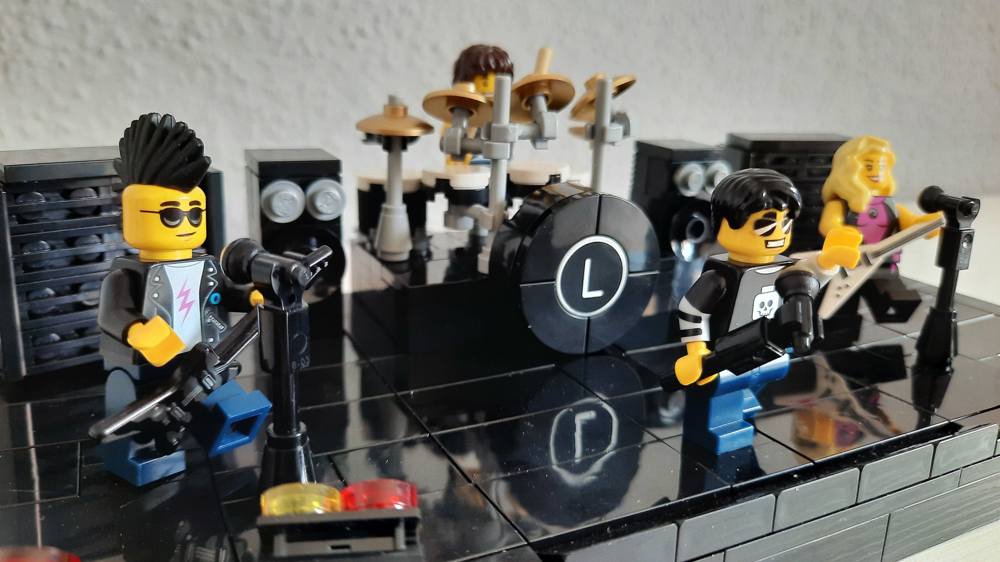

El Grupet d'En Sisket és un grup de música rock y heavy metal catalana, amb el típic format de instruments: veu, guitarra, bateria i baix. Inspirats en grups icònics de l'escena del metall, toquem en català tant versions de grups coneguts com temes propis.
Música 100% en català en directe
Versions i temes propis